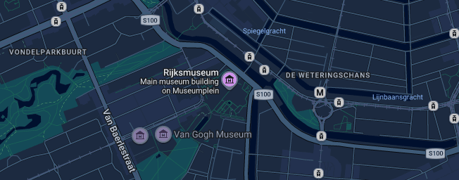

Conversation 742
Map of Rijksmuseum Entrance
Prompt 1 · You
maps phillipsvleugen is on the left side of the rijksmuseum from the museumplein side viewing the arc entrance and a 90 degree angle from...
Response 1 · Google AI Mode
Yes, your layout understanding is exactly correct.
When you stand on Museumplein looking at the south facade of the Rijksmuseum and view its monumental arched tunnel entrance (The Passage), the Philipsvleugen (Philips Wing) projects outward on the far-left corner.
Amsterdam.info +1
The 90-Degree Angle Orientation
To complete your mental map, the Philips Wing sits at a 90-degree angle from the main central axis of the building (the line of the archway/Passage running straight through to the city center side). It forms a perpendicular architectural extension on the southwest side of the museum grounds.
Van Hoogevest
Specifically, the wing runs perpendicular to the main structure and forms a 90-degree corner with Paulus Potterstraat and the western edge of the Museumplein lawn.
emap – Part of the Metropolis Group +1
What is Inside the Philips Wing
- Temporary Exhibitions: This wing features shifting high-profile temporary art displays.
- Historical Highlights: It houses the permanent photography galleries and the beautifully preserved historical Breda Wall (Muur van Breda) inside its distinct internal courtyard.
- RIJKS® Restaurant: The museum's Michelin-starred culinary venue is situated right here. Amsterdam Tips +3

Are you trying to find a specific entrance to the wing from the outside, or do you need help navigating into the Philips Wing from the interior Atrium?
Source links preserved from this response
- www.rijksmuseum.nl
https://www.rijksmuseum.nl/nl - Amsterdam.info
https://www.amsterdam.info/museums/rijksmuseum/ - Van Hoogevest
https://www.vanhoogevest.nl/philipsvleugel-rijksmuseum-amsterdam/ - emap – Part of the Metropolis Group
https://cdn.ca.emap.com/wp-content/uploads/sites/12/2013/08/HR_PLANS_414115738.pdf - Amsterdam Tips
https://www.amsterdamtips.com/rijksmuseum